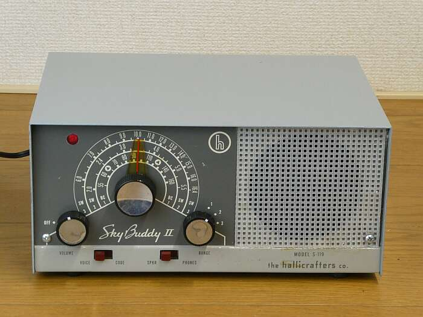
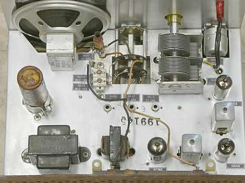
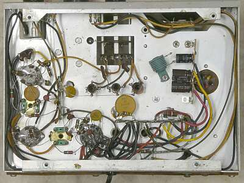
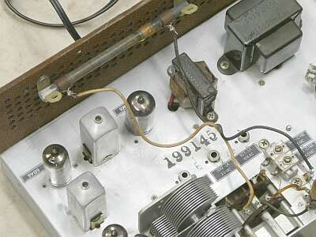
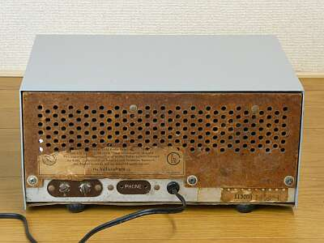
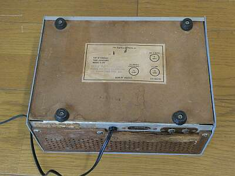

このデザインは、多くの元ラジオ少年の方に見覚えがあるように思います
ＳＴＡＲ（富士電機製作所）から発売されたＳＲ-１００あるいは、キットのＳ-１００Ｋと同じデザイン、またその後グローン・キットとして（教材用として）並３からスーパー方式まで成長できるラジオ・キットとして販売されていたものと、ほぼほぼ同じデザインです
発売は、このＳ-１１９の方が早く、１９５９年
ＳＲ-１００、Ｓ-１００Ｋの発売は、１９６３年
ＵＳでの販売が一段落した後、国内に向けて販売した・・・すなわち、本機はＳＴＡＲのＯＥＭではないかと言われているようです
確かにデザインも、hallicraftersのイメージとは異なります
使用真空管の構成などは、異なりますが、動作の基本はいずれも５球スーパーです
トランス方式ながら、小型軽量…コンパクトな製品です |
 |
|
本機は、１９５９年に発売された民生用通信型受信機です
電源は、トランス方式ながら、
２６７ ｘ １２７ ｘ １９１ｍｍ ３．６Ｋｇ と、小型軽量です
ＢＣ帯から１６．４ＭＨｚまで３バンドでカバーします
１：５４０ＫＨｚ～１６４０ＫＨｚ
２：２ＭＨｚ～５．５ＭＨｚ
３：６ＭＨｚ～１６．４ＭＨｚ
構成ですが、ＡＦは複合管を使用し、３球ながら５球スーパー構成です
簡易型のBFOを内臓（CW対応）
ＩＦ増幅管のサプレッサ・グリッドを浮かすことで一種の自己発振をさせる方式で、CWは実用になりますが、SSBの復調には至りませんでした
余談ながら、ここを細かく調整できるようにしたＳＸ-１４０では、ＲＦゲイン調整と併用すること（検波入力を絞ること）で、ＳＳＢも復調が出来ました
本機は、全てＭＴ管で
６ＢＥ６ ― ６ＢＡ６ ― ６ＣＭ８ の３球に、検波はダイオード、整流はセレン整流器です |
|
 |
シャーシ上面
整然とした配置です
真空管は、ご覧のように３本です
|
 |
シャーシ底面
右に配置されている電源部
ブロックコンデンサと整流用のセレン整流器は使用していません（ブロック・コンデンサは劣化が著しい）
新たにシリコン・ダイオードと縦型チューブラ・コンデンサで構成しています |
 |
シャーシ上面、リアパネル側です
ＢＣ帯用のバーアンテナが、取り付いています
ＡＦトランスとＩＦＴの間に見える真空管が、3極5極複合管の６ＣＭ８です
|
 |
リアパネルです
ＡＣコードを通すブッシングが無くなっていたので、劣化の激しいＡＣコードの交換に合わせ、ブッシングを取り付けました |
 |
底面はこんな様子
真空管のレイアウトが書かれています |
|
|